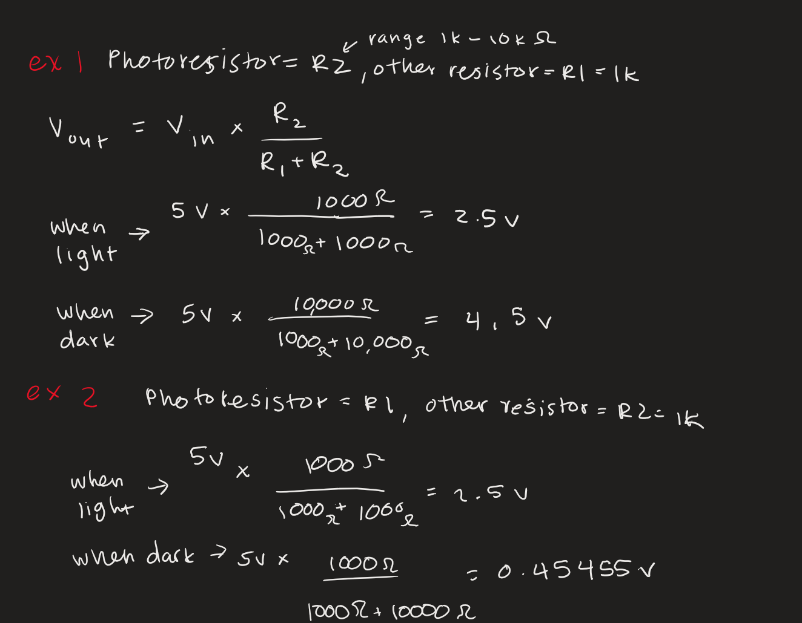

Overview
For this assignment, I used a MOSFET transistor and ultrasonic sensor to control a strip of LEDs that required a higher voltage. The sensor detected the distance of the object and made the lights brighter as the object got closer.

Code
Here is the code I used:
//Reference: https://projecthub.arduino.cc/Isaac100/getting-started-with-the-hc-sr04-ultrasonic-sensor-7cabe1
// pins
const int trigPin = 11;
const int echoPin = 12;
const int ledPin = 9; // connected to gate which connects to LED strips
// distance limits
const int minDist = 1; // cm
const int maxDist = 10; // cm
void setup() {
pinMode(trigPin, OUTPUT);
pinMode(echoPin, INPUT);
pinMode(ledPin, OUTPUT);
Serial.begin(9600);
}
void loop() {
// measure distance
digitalWrite(trigPin, LOW);
delayMicroseconds(2);
digitalWrite(trigPin, HIGH);
delayMicroseconds(10);
digitalWrite(trigPin, LOW);
long duration = pulseIn(echoPin, HIGH);
float distance = duration * 0.034 / 2; // convert to cm
// map to brightness
distance = constrain(distance, minDist, maxDist);
//calculates brightness where closer = brighter
int brightness = map(distance, maxDist, minDist, 0, 255);
analogWrite(ledPin, brightness);
// debug and print to serial output
Serial.print("distance: ");
Serial.print(distance);
Serial.print(" cm brightness: ");
Serial.println(brightness);
delay(30);
}
Additional Questions
1. The maximum amount of current that can flow through Pin 2 to Pin 3 is 37.2 A, which is the Continuous Drain Current. This is the maximum current that can flow through the transistor without damaging it.

2. I would use a capacitor that can handle a 16V rating: https://www.adafruit.com/product/2193?srsltid=AfmBOorRLMB4KR21m_HyOnmNFLKALe4r2i80c8dhf2Wc1b7q8rwiVgUt This is because I want to create a 20% confidence range above the 12V requirement to power the motor.

3. Referenced: https://lastminuteengineers.com/l293d-dc-motor-arduino-tutorial/ for schematic and code. I would turn on both motors by turning the odd ins to high and the even ins to low on both motors. To switch directions, I would swap the evens and odds. To move one forward and one backward, I would set the pins of one motor to high and low respectively and the other motor to low and high. To move one backward and one forward, I would do the opposite of the previous.
4. I used AI tools when figuring out question 2, but did not use them for my final answer because I was unsatisfied with the output, especially because the question was initially unclear to me.